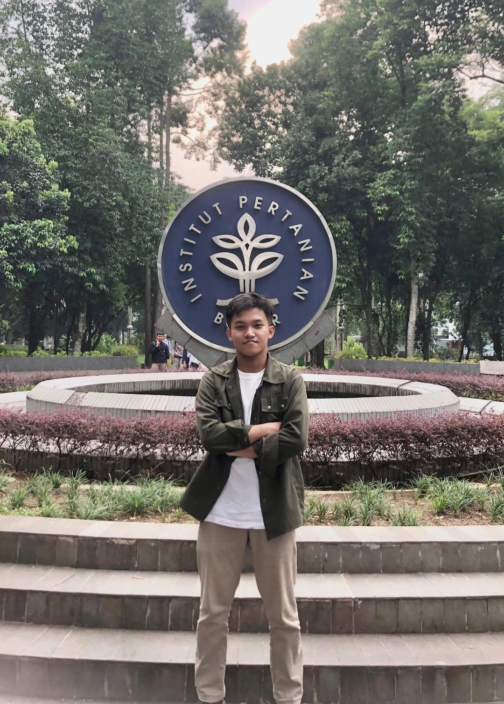

Football & Futsal
Keseruan bermain sepak bola dan futsal. Buat saya, olahraga bukan cuma soal menang, tetapi juga kebersamaan dan momen yang tercipta.
My football moments ⚽

Selamat datang di Universe Dzikri, Universe yang dimana Dzikri dengan semangat Blaugrana nya. Di sini, cerita tentang diri saya, hal-hal yang saya sukai, dan kecintaan pada FC Barcelona berpadu dalam warna merah-biru. Karena bagi saya, Barcelona bukan sekadar Club biasa ada kebanggaan, kesetiaan, dan cerita di dalamnya.

Kenalin, saya Muhamad Dzikri Akbar Hidayat, mahasiswa Program Studi Teknik Logistik di Universitas Pendidikan Indonesia.
Website ini saya buat sebagai tempat untuk berbagi sedikit tentang diri saya. Mulai dari kegiatan yang saya nikmati, film dan tokoh favorit, sampai klub sepak bola yang punya tempat spesial di hati. Anggap saja ini pintu masuk ke dunia kecil bernama Universe Dzikri.
Beberapa hal yang selalu punya tempat di waktu luang saya—dari lapangan, layar film, sampai arena game.
Keseruan bermain sepak bola dan futsal. Buat saya, olahraga bukan cuma soal menang, tetapi juga kebersamaan dan momen yang tercipta.
My football moments ⚽
Adegan film yang berkesan selalu punya cara tersendiri untuk membuat cerita terasa lebih hidup dan sulit dilupakan.
My favorite scene 🎥
Momen sepak bola yang berkesan dan selalu seru untuk ditonton kembali, terutama pertandingan yang penuh drama.
Barca PSG 🔥🔵🔴
Mulai dari aktor favorit sampai klub yang saya dukung dengan sepenuh hati.

Saya suka Jason Statham karena perannya dalam film aksi sering terasa intens dan menegangkan. Adegan ekstrem yang dibawakannya membuat jalan cerita semakin seru.

Gausah ditanya lagi, dunia pun tahu siapa bintangnya. My GOAT, my king, Lionel Messi! Buat saya, data, prestasi, dan piala sudah berbicara sendiri.

Buat saya, Barcelona bukan sekadar klub sepak bola. Ada keindahan, sejarah, dan rasa setia yang sudah menemani sejak kecil. Bagi saya, kesetiaan dan Barcelona adalah dua hal yang sulit dipisahkan.

Entah kata apa yang paling pas untuk menggambarkannya. Yang terlintas hanya satu kalimat: “Persib mah Bahasa Hate.” Semua hal tentang Persib punya tempat tersendiri di hati saya.
Dalam hidup, mungkin ada saatnya kita diremehkan, dikecewakan, atau merasa tertinggal dari orang lain. Rasanya wajar kalau ingin membuktikan sesuatu kepada mereka. Namun, jangan sampai rasa sakit membuat kita berhenti bertumbuh atau menghabiskan hidup hanya untuk mengejar pengakuan.
Ada sebuah kutipan yang sering dikaitkan dengan Ali bin Abi Thalib, yang mengingatkan kita untuk mengubah rasa sakit menjadi alasan untuk berkembang:
“Balas dendam terbaik adalah menjadikan dirimu lebih baik.”
Maknanya, kita tidak harus membalas perlakuan buruk dengan keburukan yang sama. Balaslah dengan memperbaiki diri, belajar dari pengalaman, menjaga sikap, dan terus melangkah menuju versi diri yang lebih baik. Bukan untuk membuat orang lain menyesal, melainkan agar hidup kita tidak ditentukan oleh perlakuan mereka. Pada akhirnya, kemenangan yang paling berarti adalah ketika kita mampu tumbuh tanpa kehilangan jati diri.
Terus bertumbuh, tetap rendah hati, dan buktikan lewat tindakan — Star Dzikri.
Kembali ke atas ↑